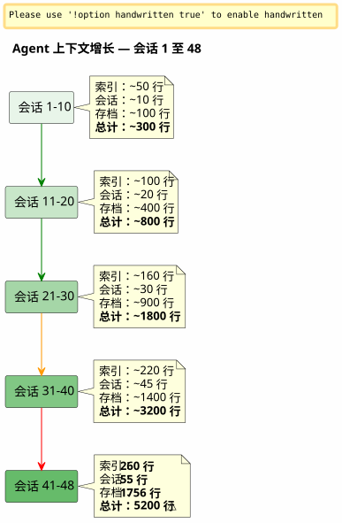

滑动窗口与寒潮：当 Agent 上下文爆炸且必须在不丢失信息的情况下进行归档时
发布于 26 April 2026
摘要
经过 48 次针对单一项目的会话，以及累计超过 150 次，我精心构建的 Eager/Lazy 治理系统开始出现压力。代理文件本应轻量，却累计达到了 5200 行。自动加载的上下文增长速度超过了我控制它的能力。本文讲述了我如何构想一种备份机制——介于滑动窗口与完全相同的冷冻波之间——以维持轻量的活跃上下文，同时永不丢失任何信息。
信号：5200 行
我正在第048次会议上`magic-stick`我的 Linux 实时 ISO 构建项目。Opencode 正在注视着我。和往常一样，它在会话开始时自动加载了我的 Eager 文件 —AGENT.adoc, PROMPT_REPRISE.adoc, .agents/INDEX.adoc. 没有什么异常。
除了有点不对劲。回复变慢了。推理更加稀释。代理忘记了它在两条消息前还眼前的细节。
我打开一个终端，然后输入：
wc -l .agents/INDEX.adoc .agents/SESSIONS_HISTORY.adoc \
.agents/archives/COMPLETED_TASKS_ARCHIVE_2026-04.adoc260 行用于 INDEX。55 行用于 SESSIONS_HISTORY。1756 用于 COMPLETED_TASKS_ARCHIVE。
文件`sessions/`再添加约3200行。总计：5200 行被加载的上下文，以某种方式，位于代理的临时大脑中。
我之前文章中理论化的Eager/Lazy策略是有效的——但它有一个我未曾预料到的先天缺陷：它没有没有老化机制. 每个会话在 INDEX 中添加一行，在 COMPLETED_TASKS 中添加一个段落，在 sessions/ 中添加一个文件。 从不输出任何内容。 上下文就像一个雪球，随着每个新会话而变大。

这不是一个错误，而是会话结束程序的直接结果，该程序会细致地存档每一个细节。系统成为其自身成功的牺牲品。
诊断：三重冗余
我要求代理诊断问题。他的回答既快速又精准。
文件 |
线条 |
角色 |
问题 |
|
260+ |
EAGER (自动充电) |
自001起的所有会话表 —+1 行/会话 |
|
55 |
渴望的 |
汇总表 —冗余与 INDEX |
|
1756 |
急切的 (隐式) |
所有四月会议的完整详情 |
|
~5200 total |
所谓的懒惰 |
个人档案，但未使用因为一切已经在 COMPLETED_TASKS 中 |
代理人识别出四个根本原因：
-
COMPLETED_TASKS_ARCHIVE 吸收一切— 而不是指向档案`.sessions/`, 他完整地复制每次会话。
-
INDEX.adoc 充当完整的历史记录— 最近会话表包含30+条记录。
-
SESSIONS_HISTORY.adoc 重复的— 与 INDEX 相同的信息，格式不同。
-
规则 LAZY 未被遵守— COMPLETED_TASKS 隐式地是 EAGER，因为它包含了所有内容。
他的提议是激进的：将 INDEX 限制在 10 次会话，清空 COMPLETED_TASKS，将 SESSIONS_HISTORY 移动到纯 LAZY。立即收益：约1900行已节省.
它很干净、高效、合乎逻辑。但我对这种方法有问题。
为什么我拒绝了明显的解决方案
代理的解决方案是工程师优化缓存的方案。限制。截断。删除冗余。
但这些"冗余"并非如此。每个治理文件都捕获一个。不同的角度在同一现实中：
-
索引= 宏观视图, 执行仪表盘
-
会话历史= 线性时间表，已评分
-
已完成任务存档= 详细的叙述，包含指标
-
sessions/*.adoc = 个人档案，完整的上下文
这不是愚蠢的复制。这是结构化的多重视角这正是进行提炼所需要的——为了让以后的人类（或训练得更好的未来LLM）能够交叉验证角度并提取模式。
想象一位数据科学家对你说：“我们删掉6列中的3列，它们是相关的。” 你会怎样回答他？你说：相关性并不是冗余，当每一列捕捉到同一现象的不同维度时。正是这种维度的丰富性使得数据集变得可用。
这是我的直觉。我坚持反对代理人那冷冰冰的理性。
_ 在我的想法中，我看不到一个安静的万用袋。我们不是把一切都塞进去，而是转移会议结束程序的结构化结果 — — 每个文件都有其角度，其冗余实际上是一种丰富。正是这种多维材料将更适合用于蒸馏。 _
特工指责这次打击。然后他进行自我纠正。
提案：相同的寒冷波
然后代理提出了一种更精细的机制，既符合我对丰富数据集的直觉，又解决了上下文爆炸的技术问题。
原则很简单，直接受到模式的启发热/温/冷存储适用于档案管理：
-
热 (急切)= INDEX 中的最近 10 次会话，会话 N+1 的 PROMPT_REPRISE，以及最近的 2 个会话文件
-
温暖 (LAZY)= SESSIONS_HISTORY 最近, SCRIPT_VERIFICATION, 所有参考文档
-
冷 (backup/)= 其余全部，已移动完好的, 不进行转换，不重新索引
----
----
----
----
.agents/
├── INDEX.adoc → Sessions N-9 à N (10 dernières)
├── SESSIONS_HISTORY.adoc → Sessions N-9 à N
├── SCRIPT_VERIFICATION.adoc → Dernière vérif (pas d'historique)
├── PROMPT_REPRISE.adoc → Session N+1 uniquement
├── sessions/ → Sessions N-1 à N uniquement
└── backup/
└── Y2026-sessions-001-039/ ← Vague froide, COPIE INTÉGRALE
├── INDEX.adoc → Sessions 001 à 039 (complet)
├── SESSIONS_HISTORY.adoc → Sessions 001 à 039 (complet)
├── COMPLETED_TASKS_ARCHIVE.adoc → Sessions 001 à 039 (complet)
└── sessions/ → 001.adoc, 002.adoc...
----
机制的关键:**备份不是一个中心索引，而是过去那波的精确副本**. 当我们超过10个活跃会话的范围时，我们不会删除任何东西。我们不会重新索引任何东西。我们不会合并任何东西。我们获取会话N-10时的代理文件包的原样，并将其移入`backup/`.
活动文件则被截断：
* 索引：仅最近的 10 行（滑动窗口）
* SESSIONS_HISTORY : 相同
* COMPLETED_TASKS_ARCHIVE : 当前时期的新文件
* sessions/ : 仅最后两个会话
[plantuml, format=svg, id=diag-hot-warm-cold, alt="Architecture Hot/Warm/Cold du contexte agent — EAGER/LAZY/backup"]
----
@startuml
skinparam backgroundColor #FEFEFE
skinparam defaultTextAlignment center
skinparam wrapWidth 200
title 上下文代理的热/温/冷架构
package "HOT (EAGER)\n自动加载\n~300 行" as HOT #FFCDD2 {
file "INDEX.adoc\n（10 次会议）" as IDX_HOT
file "PROMPT_REPRISE\n(会话 N+1)" as PRO_HOT
file "AGENT.adoc\n(绝对规则)" as AG_HOT
}
package "WARM (LAZY)\n按需加载\n~500 行" as WARM #FFF9C4 {
file "SESSIONS_HISTORY\n(最近10条)" as HIS_WARM
file "SCRIPT_VERIFICATION\n(最后)" as VER_WARM
file "PROCEDURES.adoc\n(模板)" as PRO_WARM
file "*_REFERENCE.adoc\n(技术文档)" as REF_WARM
}
package "COLD (backup/)\n从未充电\n仅限人工阅读" as COLD #BBDEFB {
folder "Y2026-001-039/" as WAVE {
file "索引 (完整)" as IDX_COLD
file "SESSIONS_HISTORY\n(完整)" as HIS_COLD
file "COMPLETED_TASKS\n(完成)" as ARCH_COLD
folder "会话/ (001-039)" as SESS_COLD
}
folder "Y2026-040-???\n(未来)" as FUTURE
}
HOT --> WARM : "代理上升\n如果需要"
WARM --> COLD : "从不自动\n人类独自前往"
note bottom of COLD
Règle : COPIE INTÉGRALE
Pas de transformation
Pas de réindexation
Read-only après archivage
end note
@enduml
----
即时收益巨大：EAGER 上下文从**~5200 行到 ~300 行**. 除以 17。 没有丢失任何一行历史数据。
== 为什么这不是一个万能袋
代理在第一次迭代中担心`backup/`成为一个黑盒子 — 一个把文件丢进去永不再看的文件夹。这是一种合理的恐惧。但它建立在一种混淆之上。
万能收纳袋，就是把文件随便扔进去的时候。**没有结构，没有惯例，没有分组的逻辑**. 在这里，备份按时期（Y2026-001-039）结构化，每个备份文件夹包含**相同的结构**该文件`.agents/` actif : INDEX, SESSIONS_HISTORY, COMPLETED_TASKS_ARCHIVE, sessions/.
这不是一个杂乱无章的东西。这是一个**时间戳快照**. 甚至可以说这是一种简化的版本控制机制 — — 只是它不逐个文件进行版本控制，而是在某一时刻对整个治理包进行版本控制。
当你想检索旧信息时，不需要一个中央索引。你有两种选择：
1. **grep` 有针对的** : `grep -r "zsh" backup/Y2026-001-039/`— 你会找到所有在这段时间内提到 zsh 的内容，无论角度如何（INDEX, SESSIONS_HISTORY, 会话存档）。
2. **手动重新集成**: 您临时将备份文件夹复制到活动上下文中，并要求代理分析此特定时期。
索引是隐式的。它存在于文件结构本身 — — 每个文件已经从其自身的角度成为一个索引。
== 书架的隐喻
为了让机制直观，我把它概念化为三层架子：
* **书架 1 (EAGER)**— 工作计划。我需要的东西 *现在*。最近的 INDEX, PROMPT_REPRISE, 绝对规则。轻便、即时、关键。
* **架子 2 (LAZY)**— 参考文献库。我可以根据需求检索的内容。技术参考、近期历史、程序。体积较大，但未加载到内存。
* **洞穴 (备份/)**— 冷冻档案。所有已发生但我不想丢弃的东西。代理永不会进入其中。人类在想要提炼时会下去。
代理最初提出了第四层搁板 — — 一个`index-backup.adoc`它将是LAZY，并包含整个备份的目录。我拒绝了。这将是系统中多余的冗余，而该系统已经在经历线性增长的痛苦。归档文件的结构已经是一个索引。
== 双触发传感器
概念化很牢固，但仍有一个盲点：**究竟何时触发旋转？**最初的文章将其标记为一个开放式问题。两天后，答案被编码在六个项目的治理文件中：一种双触发传感器。
=== 自动触发器 — `N % 10 == 0
第一个触发器是数学的。当会话编号是10的倍数时——会话10、20、30、40——备份旋转会在会话结束过程的步骤6之后自动执行。
为什么是10？这是两股相反力量之间的折中：窗口太短（5 次会话）会丢失维持连续性所需的上下文；窗口太长（20 次会话）无法解决上下文肥胖的问题。十次会话，以每天一到两次的频率进行，大约覆盖一周的工作时间——足以让代理记住最近的决定，但又不至于让上下文爆炸。
=== 阈值触发器 — 500 行 EAGER
第二个触发器是动态的。无论会话编号如何，如果累积的 EAGER 文件超过**500 行**, 旋转开始。
此阈值可防止会话异常高效的情形——极少数会话中编写了大量内容。生成120行编辑内容的会话会使 COMPLETED_TASKS_ARCHIVE 增长得比调试会话仅修改两行要快得多。500行的阈值，通过`wc -l .agents/INDEX.adoc .agents/archives/COMPLETED_TASKS_ARCHIVE_*.adoc PROMPT_REPRISE.adoc`, 捕捉这种不对称。
=== 手动触发器 — "rotation backup
最后，人类仍然掌握主动。关键词`rotation backup`, `backup rotation` ou `lance la rotation backup`在需要时触发程序，与会话结束无关。当感觉上下文变得沉重但尚未达到10的倍数时，或想在开始新阶段前存档当前工作阶段时，这很有用。
[plantuml, format=svg, id=diag-capteur-trigger, alt="Les trois déclencheurs du capteur de rotation backup — automatique, seuil, manuel"]
----
@startuml
skinparam backgroundColor #FEFEFE
skinparam defaultTextAlignment center
skinparam wrapWidth 200
title 备份旋转传感器 — 三个触发器
start
:Procédure de fin de session;
note right: Mots-clés "会话结束"\nou "我们就此为止"
:Étapes 1 à 6\n(archivage standard);
note right
1. Archive sessions/N.adoc
2. MAJ PROMPT_REPRISE
3. MAJ SESSIONS_HISTORY
4. MAJ INDEX.adoc
5. MAJ TEST_COVERAGE
6. MAJ COMPLETED_TASKS
end note
if (N % 10 == 0\nOU\nEAGER cumulé > 500 lignes ?) then (oui)
:⚙️ Rotation Backup\n(étape 7);
note right
1. Créer backup/Y20XX-sessions-X-Y/
2. Copier intégrale INDEX + HISTORY
+ COMPLETED_TASKS + sessions/
3. Tronquer actifs à 10 sessions
4. Ajouter _Localisation active_
end note
else (non)
:Pas de rotation;
endif
:Checklist [✅] x 7\n(si applicable);
stop
@enduml
----
此图显示了传感器在会话结束程序中的精确插入。步骤7是可选的 — 只有当两个条件中的任何一个为真时才会执行 — 但它会被系统地 *验证* 。最终检查清单包括`[✅] 7. Backup roté (si applicable)`.
=== 闭环
这个传感器闭合了前一篇文章打开的循环。Eager/Lazy 治理已解决了两次会话之间的代理内存问题。Hot/Warm/Cold 机制已解决了内存增长的问题。双触发器传感器解决了*quand*的问题 — — 减轻了人类监控上下文大小的心理负担。
[plantuml, format=svg, id=diag-boucle-fermee, alt="Les trois couches de la gouvernance agent — Eager/Lazy, Hot/Warm/Cold, Capteur"]
----
@startuml
skinparam backgroundColor #FEFEFE
skinparam defaultTextAlignment center
title 代理治理的三层
left to right direction
package "第1层 — 存储\n(条款 0108)" as C1 #E8F5E9 {
rectangle "**EAGER**\n仪表盘\n自动充电" as EAG
rectangle "**LAZY**\n使用手册\n按需加载" as LAZ
EAG -[hidden]right-> LAZ
}
package "第2层 — 老化\n(条款 0110)" as C2 #FFF9C4 {
rectangle "**HOT**\n10 个活跃会话\n约 300 行" as HOT
rectangle "**WARM**\n参考文献\n程序" as WRM
rectangle "**冷**\nbackup/\n寒潮" as CLD
HOT -[hidden]right-> WRM
WRM -[hidden]right-> CLD
}
package "层 3 — 触发器\n(今天)" as C3 #BBDEFB {
rectangle "自动\nN % 10 == 0" as AUTO
rectangle "**阈值**\n> 500 行" as SEUIL
rectangle "**手册**\n轮换备份" as MAN
AUTO -[hidden]right-> SEUIL
SEUIL -[hidden]right-> MAN
}
C1 --> C2 : "内存增长\n→ 需要一个机制\n老化"
C2 --> C3 : "老化\n→ 需要一个触发器\n为了执行它"
note bottom of C3
✅ Déployé sur 6 projets
magic-stick · bakery-gradle
plantuml-gradle · cheroliv.com
jhipster-gradle-plugins
quizz-benchmark-gradle
end note
@enduml
----
三层逻辑地堆叠。第一层为智能体提供记忆。第二层防止这种记忆使智能体窒息。第三层自动化此记忆的维护，使人类无需思考。
=== 在 cheroliv.com 上的有效迁移
机制并没有停留在理论上。上`cheroliv.com`, 第一次备份轮换于2026年4月29日已执行 — 会话 -6 到 2 已迁移至`.agents/backup/Y2026-sessions-neg6-a-002/`:
|===
|文件 |旋转前 |旋转后 |获得 |`.agents/INDEX.adoc` |列出的19个会议 |10 次会话 (3-12) |-9 条目 |`.agents/SESSIONS_HISTORY.adoc` |18场次 |10 次会议 |-8 条目 |`COMPLETED_TASKS_ARCHIVE` |161 行 (会话 1-12) |135 行 (会话 3-12) |-26 行 |`sessions/` |20个文件 |10个文件 |-10 个文件 |**备份/** |不存在的 |1 场寒流 (10 个已存档的会话) |+1 冷却包
|===
行数的增益很小 — — 项目很年轻，只有12次会话 — — 但重要的是**机制已经到位**. 下一次自动旋转将在第 20 次会话触发，或者如果达到 500 行 EAGER 则更早。
== 人类-代理课程
此次会话048让我学到了关于与AI代理协作的根本性知识。
代理人有天然偏见：它寻求**优化**, à **简化**, à **消除冗余**. 这是一个经过训练以产生干净、简洁回答的系统的偏见。 面对丰富且多维的数据集，其首要反应是将其简化为最简表达。
人类，他有不同的直觉：他感到结构化的冗余是一个**优势**, 不是一个缺陷。 不同角度对同一现实的多样性正是后来能够进行高质量提炼的关键。
不是说代理错了。而是他的“最优”不是我的最优。代理在为…优化**现在**— 直接的上下文，对所提出问题的快速回答。人类在为……进行优化**未来**— 在三个月或三年内能够寻找、交叉、提炼的能力。
____ 我想要的，是原始材料。你的思考，你的犹豫，你对我的问题的回答。不是你的综合。综合，我知道如何比你做得更好。我想要的，是原始材料。 ____
我在他课程结束时所说的这句话总结了一切。智能体是一种生产工具。人类是一种提炼工具。治理的目的不是让智能体独自理解一切——它的目的是让人类以后能够处理所产生的材料。
相同的冷浪是这种哲学的建筑式体现：我们不丢弃任何东西，我们不融合任何东西，我们不重新索引任何东西。我们只是移动完整的数据包。蒸馏将稍后由人工手动进行。
== 前一篇文章的逻辑续篇
如果你已经读了link:/blog/2026/0108_gouvernance_agent_opencode_eager_lazy_post.html[关于Eager/Lazy策略的文章]，您将会看到自然的进展：
1. **条款 0108**— Eager/Lazy 治理：*如何* 将代理上下文构造成两个可用性级别
2. **这个条目0110**— 备份机制：*如何* 在不丢失的情况下让上下文变老，当它变得太大时
第一篇文章回答了问题：“智能体在两次会话之间不记得任何东西，如何让它拥有记忆？”
这回答了第一个问题中必然产生的问题：“内存会随着每次会话而增长，如何在不擦除它的情况下防止它压垮代理？”
答案在于一个模式：**热/温/冷**, 应用于治理文件。 并且作为一个原则 :**永不丢失任何东西，始终重新定位一切**。
== 链接
* 上一篇文章：link:/blog/2026/0108_gouvernance_agent_opencode_eager_lazy_post.html[使用 AsciiDoc 管理 AI 代理]
* 我的网站：https://cheroliv.com
* 项目`magic-stick`: https://github.com/cheroliv/magic-stick
---
*一个良好的治理系统永远不会删除数据。它会把它们整理好。*
----
----
机制的关键：**备份不是中央索引，而是过去波浪的一份精确副本。**. 当超过 10 个活跃会话的地平线时，我们不删除任何东西。我们不重新索引任何东西。我们不合并任何东西。我们取代理文件包，保持其在第 N-10 会话时的状态，并将其移动到`backup/`.
活跃的文件则被截断：
* 索引：仅最近10行（滑动窗口）
* SESSIONS_HISTORY : 以上
* COMPLETED_TASKS_ARCHIVE : 当前期间的新文件
* sessions/ : 仅限最近两次会话
[plantuml, format=svg, id=diag-hot-warm-cold, alt="Architecture Hot/Warm/Cold du contexte agent — EAGER/LAZY/backup"]
----
@startuml
skinparam backgroundColor #FEFEFE
skinparam defaultTextAlignment center
skinparam wrapWidth 200
title Agent 上下文的热/温/冷架构
package "HOT（EAGER）\n自动加载\n~300 行" as HOT #FFCDD2 {
file "INDEX.adoc\n（10 个会话）" as IDX_HOT
file "恢复提示词\n(会话 N+1)" as PRO_HOT
file "AGENT.adoc\n（绝对规则）" as AG_HOT
}
package "WARM (LAZY)\n按需加载\n~500 行" as WARM #FFF9C4 {
file "SESSIONS_HISTORY\n(最近 10 个)" as HIS_WARM
file "脚本验证\n（最新）" as VER_WARM
file "PROCEDURES.adoc\n（模板）" as PRO_WARM
file "*_REFERENCE.adoc\n（技术文档）" as REF_WARM
}
package "COLD (backup/)\n从未加载\n仅限人工阅读" as COLD #BBDEFB {
folder "Y2026-001-039/" as WAVE {
file "索引（完整）" as IDX_COLD
file "SESSIONS_HISTORY\n（完整）" as HIS_COLD
file "COMPLETED_TASKS\n(完成)" as ARCH_COLD
folder "会话/（001-039）" as SESS_COLD
}
folder "Y2026-040-???\n（未来）" as FUTURE
}
HOT --> WARM : "代理按需上报"
WARM --> COLD : "绝不自动\n人类独自前往那里"
note bottom of COLD
Règle : COPIE INTÉGRALE
Pas de transformation
Pas de réindexation
Read-only après archivage
end note
@enduml
----
即时收益巨大：EAGER 上下文从**~5200 行 至 ~300 行**. 除以 17。未丢失任何历史数据行。
== 为什么这不是一个万能袋
代理在第一次迭代时担心`backup/`成为一个黑盒子 —— 一个把文件丢进去、永不会再阅读的文件夹。这是一种合理的恐惧。但它建立在一个误解之上。
一个杂乱的堆放，就是把文件随便扔进去**无结构，无约定，无分组逻辑**. 这里，备份按照时期(Y2026-001-039)结构化，每个备份文件夹都包含**相同的结构**该文件`.agents/`活跃 : INDEX, SESSIONS_HISTORY, COMPLETED_TASKS_ARCHIVE, sessions/
这不是一个万能袋。它是一个**带时间戳的快照**. 甚至可以说这是一种简化的版本控制机制——除了它不是单独对文件进行版本控制，而是在某一时刻对整个治理包进行版本控制。
当您想要查找旧信息时，您不需要一个中央索引。您有两种选择：
1. **grep` 有针对性的**:`grep -r "zsh" backup/Y2026-001-039/`— 并且您会找到该时期内所有提到 zsh 的内容，无论角度如何（INDEX、SESSIONS_HISTORY、会话存档）。
2. **手动重新集成**: 您临时将备份文件夹复制到活动上下文中，并要求代理分析此特定时期。
索引是隐含的。它存在于文件本身的结构中 — 每个文件都已经是从其自身角度出发的一个索引。
== 书架的隐喻
为了使机制直观，我把它概念化为三层架子：
* **书架 1 (EAGER)**— 工作计划。我需要的 *现在*。最近的 INDEX, PROMPT_REPRISE, 绝对规则。轻盈, 即时, 关键。
* **架子 2 (LAZY)**— 咨询图书馆。我可以按需取阅的资料。技术参考、最近的历史记录、程序。体积较大，但未加载到内存。
* **洞穴 (backup/)**— 冷档案。所有过去的东西，但我不想丢弃。代理永不进入那里。人类在想要提炼时会下去那里。
代理最初提出了第四层架子 — 一个`index-backup.adoc`它会是LAZY并包含整个备份的目录。我拒绝了。这将是已经面临线性增长问题的系统中的另一种冗余。归档文件的结构已经是一个索引。
== 双触发传感器
概念化很稳固，但仍有盲点：**何时应当精确触发旋转？**最初的文章将其识别为一个未解决的问题。两天后，答案被编码在六个项目的治理文件中：一个双触发传感器。
=== 自动触发器 — `N % 10 == 0
第一个触发器是数学上的。当会话编号是10的倍数时 — 会话 10、20、30、40 — 备份旋转会在会话结束过程的步骤6之后自动执行。
为什么是10？因为它是在两种相反力量之间的折中：窗口太短（5次会话）会失去维持连续性所需的上下文；窗口太长（20次会话）则无法解决上下文臃肿的问题。十次会话，以每天一到两次的频率，大约覆盖一周的工作时间——足以让代理记住最近的决定，又不至于让上下文膨胀。
=== 阈值触发——500 行 EAGER
第二个触发器是动态的。无论会话编号如何，如果累积的EAGER文件超过**500 行**，旋转被触发。
这个阈值可以防止出现以下情况：会话异常高产 — — 在少数会话中写下大量内容。生成120行编辑内容的会话会使 COMPLETED_TASKS_ARCHIVE 的增长速度远快于仅修复两行的调试会话。500 行的阈值，通过`wc -l .agents/INDEX.adoc .agents/archives/COMPLETED_TASKS_ARCHIVE_*.adoc PROMPT_REPRISE.adoc`, 捕获这种不对称。
=== 手动触发器 — \"rotation backup\
最终，人类仍然掌握主动权。关键词`rotation backup`, `backup rotation` ou `lance la rotation backup`它们在需要时触发过程，与会话结束无关。当感觉上下文变得沉重但尚未达到 10 的倍数时，或者在开始新阶段之前想要存档当前工作阶段时，这很有用。
[plantuml, format=svg, id=diag-capteur-trigger, alt="Les trois déclencheurs du capteur de rotation backup — automatique, seuil, manuel"]
----
@startuml
skinparam backgroundColor #FEFEFE
skinparam defaultTextAlignment center
skinparam wrapWidth 200
title 备份旋转传感器 — 三个触发器
start
:Procédure de fin de session;
note right: Mots-clés "会话结束"\nou "我们到此为止吧"
:Étapes 1 à 6\n(archivage standard);
note right
1. Archive sessions/N.adoc
2. MAJ PROMPT_REPRISE
3. MAJ SESSIONS_HISTORY
4. MAJ INDEX.adoc
5. MAJ TEST_COVERAGE
6. MAJ COMPLETED_TASKS
end note
if (N % 10 == 0\nOU\nEAGER cumulé > 500 lignes ?) then (oui)
:⚙️ Rotation Backup\n(étape 7);
note right
1. Créer backup/Y20XX-sessions-X-Y/
2. Copier intégrale INDEX + HISTORY
+ COMPLETED_TASKS + sessions/
3. Tronquer actifs à 10 sessions
4. Ajouter _Localisation active_
end note
else (non)
:Pas de rotation;
endif
:Checklist [✅] x 7\n(si applicable);
stop
@enduml
----
此图显示了传感器在会话结束程序中的精确插入。步骤7是可选的 — 只有在两个条件中的任何一个为真时才会执行 — 但它始终会被*验证*。最终检查清单包括`[✅] 7. Backup roté (si applicable)`.
=== 闭环
这个传感器闭合了前一篇文章打开的循环。Eager/Lazy 治理已经解决了两次会话之间的代理内存问题。Hot/Warm/Cold 机制解决了内存增长的问题。双触发传感器解决了 *什么时候* 的问题 — — 免除了人类监控上下文大小的心理负担。
[plantuml, format=svg, id=diag-boucle-fermee, alt="Les trois couches de la gouvernance agent — Eager/Lazy, Hot/Warm/Cold, Capteur"]
----
@startuml
skinparam backgroundColor #FEFEFE
skinparam defaultTextAlignment center
title Agent治理的三个层次
left to right direction
package "第1层 — 记忆\n（第0108条）" as C1 #E8F5E9 {
rectangle "**EAGER**\n仪表板\n自动加载" as EAG
rectangle "**LAZY**\n用户手册\n按需加载" as LAZ
EAG -[hidden]right-> LAZ
}
package "第2层 — 老化\n（第0110条）" as C2 #FFF9C4 {
rectangle "**热门**\n10 个活跃会话\n约 300 行" as HOT
rectangle "**WARM**\n参考\n程序" as WRM
rectangle "**COLD**\nbackup/\n寒潮" as CLD
HOT -[hidden]right-> WRM
WRM -[hidden]right-> CLD
}
package "第3层 — 触发器\n（今天）" as C3 #BBDEFB {
rectangle "**自动**\nN % 10 == 0" as AUTO
rectangle "**阈值**\n> 500 行" as SEUIL
rectangle "**手册**\n轮换备份" as MAN
AUTO -[hidden]right-> SEUIL
SEUIL -[hidden]right-> MAN
}
C1 --> C2 : "记忆会增长\n→ 需要一种老化机制"
C2 --> C3 : "老化\n→ 需要一个触发器\n来执行它"
note bottom of C3
✅ Déployé sur 6 projets
magic-stick · bakery-gradle
plantuml-gradle · cheroliv.com
jhipster-gradle-plugins
quizz-benchmark-gradle
end note
@enduml
----
三层逻辑地堆叠在一起。第一层给代理提供记忆。第二层防止这种记忆淹没代理。第三层自动化这种记忆的维护，使人类不必去思考它。
=== 在 cheroliv.com 上的有效迁移
机制并未仅仅停留在理论上。 在`cheroliv.com`, 第一次备份轮换于2026年4月29日执行 — 会话 -6 到 2 已迁移至`.agents/backup/Y2026-sessions-neg6-a-002/`：
|===
|文件 |旋转前 |旋转后 |收益 |`.agents/INDEX.adoc` |已列出 19 个会议 |10 次（3-12） |-9 条目 |`.agents/SESSIONS_HISTORY.adoc` |18 次 |10 次会话 |-8 条目 |`COMPLETED_TASKS_ARCHIVE` |161 行（会话 1-12） |135 行 (会话 3-12) |-26 行 |`sessions/` |20个文件 |10 个文件 |-10 文件 |**sauvegarde/** |不存在 |1次寒潮 (10次已存档会话) |+1 冷却包
|===
代码行的增长很小 — 项目还很年轻，只有 12 次会议 — 但重要的是它**机制已就位**. 下一次自动旋转将在会话 20 时触发，或者如果达到 500 行 EAGER，则更早。
== 人类-代理课程
这次 048 次会话让我对与 AI 代理协作有了根本性的认识。
代理有一种自然的偏见：它试图**优化**, à **简化**, à **消除冗余**。这是一个系统经过训练以产生干净简洁回答的偏差。面对一个丰富且多维的数据集，它的第一反应是将其简化为最简单的表达。
人类，他有不同的直觉：他感觉到结构化冗余是一个**优势**, 不是缺陷。不同角度对同一现实的多样性正是以后能够进行高质量提炼的关键。
并不是代理错了。而是他的“optimum”不是我的。代理在为……优化**现在**— 即时上下文，对所提出问题的快速回答。人类为...进行优化**未来**— 能够在三个月或三年内查找、交叉、提炼的能力。
____ 我想要的是原始材料。你的思考，你的犹豫，你对我的问题的回答。不是你的综合。综合，我知道怎么做得比你更好。我想要的是原始材料。 ____
这句话我在会议结束时对他说的话总结了一切。代理是生产工具。人类是提炼工具。治理并不是为了让代理独自理解一切 — — 而是为了让人类以后能够处理所产生的材料。
相同的冷波是这种哲学的建筑翻译：我们不丢弃任何东西，我们不合并任何东西，我们不重新索引任何东西。我们完整地移动这个包裹。蒸馏将在以后由人工手动进行。
== 前一篇文章的逻辑续篇
如果你已经读了link:/blog/2026/0108_gouvernance_agent_opencode_eager_lazy_post.html[关于 Eager/Lazy 策略的文章], 您会认出自然的进展：
1. **第0108条**— Eager/Lazy 治理：*comment* 将代理上下文分层为两个可用性级别
2. **这篇文章 0110**— 备份机制：*如何* 使此上下文老化而不丢失，当其变得过大时
第一篇文章回答了问题：« 代理在两次会话之间不记得任何东西，如何给它一个记忆？
它回答了源自第一个问题的必然问题：“内存会随着每次会话而增长，如何在不清除的情况下阻止它压垮代理人？”
答案就在一个模式中：**热/温/冷**, 应用于治理文件。并作为一个原则：**永不丢失任何东西，始终将所有东西重新定位**.
== 链接
* 上一篇文章：link:/blog/2026/0108_gouvernance_agent_opencode_eager_lazy_post.html[使用 AsciiDoc 管理 AI 代理]
* 我的网站：https://cheroliv.com
* 项目`magic-stick`: https://github.com/cheroliv/magic-stick
---
*一个良好的治理系统永不会删除数据。它只会将数据归档。*
----
机制的关键：**备份不是中央索引，而是上一次波次的完整副本**。当活跃会话数超过 10 个时，不删除任何内容。不重新索引任何内容。不合并任何内容。我们将第 N-10 次会话时的代理文件包原样取出，并将其移动到`backup/`Please provide the text you would like me to translate.
而活动文件则会被截断：
* 索引：仅限最后 10 行（滑动窗口）
* SESSIONS_HISTORY : 同上
* COMPLETED_TASKS_ARCHIVE : 当前期间的新文件
* sessions/ : 仅最后 2 个会话
[plantuml, format=svg, id=diag-hot-warm-cold, alt="Architecture Hot/Warm/Cold du contexte agent — EAGER/LAZY/backup"]
----
@startuml
skinparam backgroundColor #FEFEFE
skinparam defaultTextAlignment center
skinparam wrapWidth 200
title Agent 上下文的热/温/冷架构
package "HOT (EAGER)\n自动加载\n~300 行" as HOT #FFCDD2 {
file "INDEX.adoc\n(10 个会话)" as IDX_HOT
file "PROMPT_REPRISE\n(会话 N+1)" as PRO_HOT
file "AGENT.adoc\n(绝对规则)" as AG_HOT
}
package "WARM (LAZY)\n按需加载\n~500 行" as WARM #FFF9C4 {
file "SESSIONS_HISTORY\n(最近 10 个)" as HIS_WARM
file "SCRIPT_VERIFICATION\n(最后一个)" as VER_WARM
file "PROCEDURES.adoc\n(模板)" as PRO_WARM
file "*_REFERENCE.adoc\n(技术文档)" as REF_WARM
}
package "COLD (backup/)\n从不加载\n仅限人工阅读" as COLD #BBDEFB {
folder "Y2026-001-039/" as WAVE {
file "INDEX (完整)" as IDX_COLD
file "SESSIONS_HISTORY\n(完整)" as HIS_COLD
file "COMPLETED_TASKS\n(完整)" as ARCH_COLD
folder "sessions/ (001-039)" as SESS_COLD
}
folder "Y2026-040-???\n(未来)" as FUTURE
}
HOT --> WARM : "Agent 根据\n需要追溯"
WARM --> COLD : "绝非自动\n仅限人工访问"
note bottom of COLD
规则：完整复制
无需转换
无需重新索引
归档后只读
end note
@enduml
----
立即收益巨大：EAGER 上下文从**约 5200 行至约 300 行**除以 17。且未丢失任何一行历史数据。
== 为什么它不是一个杂货铺
该代理在首次迭代中担心`backup/`变成一个黑盒 —— 一个存放那些再也不会被阅读的文件所在的文件夹。这是一种合理的恐惧。但它基于一种混淆。
“杂货铺”是指我们将文件扔进其中的情况**无结构，无约定，无分组逻辑**。在这里，备份按周期（`Y2026-001-039`）进行结构化，且每个备份文件夹包含**相同的结构**文件夹`.agents/`激活：INDEX, SESSIONS_HISTORY, COMPLETED_TASKS_ARCHIVE, sessions/.
这并不是一个杂物堆。这是一个**带时间戳的快照**甚至可以说这是一种简化的版本控制机制——区别在于它不对单个文件进行版本控制，而是对 T 时刻治理方案的完整包进行版本控制。
当您想要找回旧信息时，不需要中央索引。您有两种选择：
1. **针对性的 `grep**请提供需要翻译的文本。`grep -r "zsh" backup/Y2026-001-039/`—— 这样您就能找到该时间段内所有提及 `zsh` 的内容，无论其来源（`INDEX`、`SESSIONS_HISTORY` 或会话存档）。
2. **手动重新集成**：您将备份文件夹临时复制到当前激活的上下文中，并要求代理分析该特定时间段。
索引是隐式的。它存在于文件本身的结构中——每个文件从其自身的角度来看已经是一个索引。
== 书架隐喻
为了使机制直观，我将其概念化为三个架子：
* **第 1 层架 (EAGER)**— 工作计划。我现在*需要*的东西。最新的 INDEX，PROMPT_REPRISE，绝对规则。轻量、即时、关键。
* **架子 2 (LAZY)**—— 查阅库。我可以根据请求去检索的内容。技术参考、近期历史、操作流程。体积较大，但不占用内存。
* **Cave (backup/)**—— 冷存档。所有已经过去但我不想丢弃的东西。代理人从不进入那里。人类在想要蒸馏时会下到那里。
代理人最初建议增加第四层架子——一个`index-backup.adoc`它将是 `LAZY` 并且包含整个备份的目录。我拒绝了。这将在一个已经深受线性增长之苦的系统中增加额外的冗余。存档文件的结构本身已经是一个索引。
== 双触发传感器
概念化很稳健，但仍有一个盲点：**具体在什么时候触发轮换？**最初的文章将其定义为一个开放性问题。两天后，答案被编入六个项目的治理文件中：一个双触发器传感器。
=== 自动触发器 — `N % 10 == 0
第一个触发条件是数学上的。当会话编号为 10 的倍数时 —— 会话 10, 20, 30, 40 —— 备份轮转会在会话结束流程中，紧接在步骤 6 之后自动执行。
为什么是 10？这是两种相反力量之间的折中：窗口太短（5 个 session）会丢失连续性所需的上下文；窗口太长（20 个 session）则无法解决上下文臃肿的问题。按每天一到两个 session 的频率，十个 session 大约涵盖一周的工作量 —— 足以让代理记住近期的决定，又不至于让上下文爆炸。
=== 阈值触发器 — 500 行 EAGER
第二个触发器是动态的。无论会话编号为何，如果累计的 EAGER 文件超过**500 行**，旋转触发。
该阈值可防止出现会话效率异常之高的情况——即在极少次数的会话中编写了大量内容。一个产生了 120 行编辑内容的会话，其使 `COMPLETED_TASKS_ARCHIVE` 增长的速度远快于一个仅修正了两行代码的调试会话。通过以下方式衡量的 500 行阈值`wc -l .agents/INDEX.adoc .agents/archives/COMPLETED_TASKS_ARCHIVE_*.adoc PROMPT_REPRISE.adoc`，捕捉到了这种不对称性。
=== 手动触发器 — "rotation backup
最后，由人类把控。关键词`rotation backup`, `backup rotation` ou `lance la rotation backup`触发按需执行的程序，而无需等待会话结束。当感觉到上下文变得臃肿，但尚未达到 10 的倍数时，或者在开始新工作阶段前想要归档当前工作阶段时，此功能非常有用。
[plantuml, format=svg, id=diag-capteur-trigger, alt="Les trois déclencheurs du capteur de rotation backup — automatique, seuil, manuel"]
----
@startuml
skinparam backgroundColor #FEFEFE
skinparam defaultTextAlignment center
skinparam wrapWidth 200
title 备份旋转传感器 — 三个触发器
start
:Procédure de fin de session;
note right: Mots-clés "会话结束"\nou "就到这里吧"
:Étapes 1 à 6\n(archivage standard);
note right
1. 存档会话/N.adoc
2. 更新 PROMPT_REPRISE
3. 更新 SESSIONS_HISTORY
4. 更新 INDEX.adoc
5. 更新 TEST_COVERAGE
6. 更新 COMPLETED_TASKS
end note
if (N % 10 == 0\nOU\nEAGER cumulé > 500 lignes ?) then (oui)
:⚙️ Rotation Backup\n(étape 7);
note right
1. 创建 backup/Y20XX-sessions-X-Y/
2. 完整复制 INDEX + HISTORY
+ COMPLETED_TASKS + sessions/
3. 将活跃会话截断至 10 个
4. 添加 _Localisation active_
end note
else (non)
:Pas de rotation;
endif
:Checklist [✅] x 7\n(si applicable);
stop
@enduml
----
此图表显示了传感器在会话结束程序中的确切插入位置。步骤 7 是可选的 —— 仅在两个条件之一成立时执行 —— 但它会被系统地*检查*。最终检查清单包括`[✅] 7. Backup roté (si applicable)`Please provide the text you would like me to translate.
=== 闭环
该传感器闭合了前一篇文章中提到的开环。Eager/Lazy 治理解决了两次会话之间的代理内存问题。Hot/Warm/Cold 机制解决了内存膨胀问题。而双触发器传感器解决了“何时”的问题——减轻了人类监控上下文大小的心理负担。
[plantuml, format=svg, id=diag-boucle-fermee, alt="Les trois couches de la gouvernance agent — Eager/Lazy, Hot/Warm/Cold, Capteur"]
----
@startuml
skinparam backgroundColor #FEFEFE
skinparam defaultTextAlignment center
title 智能体治理的三层结构
left to right direction
package "第 1 层 — 内存\n(Article 0108)" as C1 #E8F5E9 {
rectangle "**EAGER**\n仪表盘\n自动加载" as EAG
rectangle "**LAZY**\n所有者手册\n按需加载" as LAZ
EAG -[hidden]right-> LAZ
}
package "第 2 层 — 老化\n(Article 0110)" as C2 #FFF9C4 {
rectangle "**HOT**\n10 个活跃会话\n~300 行" as HOT
rectangle "**WARM**\n引用\n程序" as WRM
rectangle "**COLD**\nbackup/\n冷波" as CLD
HOT -[hidden]right-> WRM
WRM -[hidden]right-> CLD
}
package "第 3 层 — 触发器\n(今天)" as C3 #BBDEFB {
rectangle "**Auto**\nN % 10 == 0" as AUTO
rectangle "**Seuil**\n> 500 行" as SEUIL
rectangle "**Manuel**\n备份轮转" as MAN
AUTO -[hidden]right-> SEUIL
SEUIL -[hidden]right-> MAN
}
C1 --> C2 : "内存增长\n→ 需要一个\n老化机制"
C2 --> C3 : "老化\n→ 需要一个触发器\n来执行"
note bottom of C3
✅ 已部署于 6 个项目
`magic-stick` · `bakery-gradle`
`plantuml-gradle` · `cheroliv.com`
`jhipster-gradle-plugins`
`quizz-benchmark-gradle
end note
@enduml
----
这三层逻辑上层层堆叠。第一层赋予代理内存。第二层防止该内存使代理过载。第三层将该内存的维护自动化，以便人类无需为此操心。
=== 在 cheroliv.com 上完成迁移
该机制并未停留在理论阶段。在`cheroliv.com`，第一次备份轮转于 2026 年 4 月 29 日执行 —— 会话 -6 到 2 已迁移至`.agents/backup/Y2026-sessions-neg6-a-002/`Please provide the text you would like me to translate.
|===
|文件 |旋转前 |旋转后 |增益 |`.agents/INDEX.adoc` |列出 19 个会话 |10 次课程 (3-12) |-9 个输入 |`.agents/SESSIONS_HISTORY.adoc` |18 个会话 |10 次会议 |-8 个输入端 |`COMPLETED_TASKS_ARCHIVE` |161 行（第 1-12 节） |135 行（会话 3-12） |-26 行 |`sessions/` |20 个文件 |10 个文件 |-10 个文件 |**备份/** |不存在 |1 波冷波 (10 个已存档会话) |+1 冷敷包
|===
代码行的增加幅度很小——该项目还很年轻，仅有 12 个会话——但重要的是**机制已就绪**下次自动轮转将在第 20 个会话触发，或者在达到 500 行 `EAGER` 时提前触发。
== 人机交互课程
这次第 048 场会议让我学到了关于与 AI 智能体协作的一个基本道理。
代理具有一种天然偏差：它试图**优化**, à **简化**, à **消除冗余**这是由于系统被训练为产生简洁且干净的回答而产生的偏差。面对一个丰富且多维的数据集，它的第一反应是将其简化为最简单的表达形式。
而人类则有一种不同的直觉：他预感到结构化的冗余是一个**优势**，而非缺陷。正是在同一现实基础上多元视角的共存，才使得日后能够进行高质量的提炼。
并不是代理错了，而是它的“最优解”与我的不同。代理在针对...进行优化**现在**—— 即时上下文，是对所提问题的快速响应。人类针对……进行优化**未来**—— 在三个月或三年后重新找回、交叉比对并提炼的能力。
Please provide the text you would like me to translate. 我想要的，是原始素材。你的思考，你的犹豫，你对我问题的回答。而不是你的综合分析。综合分析，我知道怎么做比你做得更好。我要的是原材料。 Please provide the text you would like me to translate.
我在会话结束时对他说出的这句话概括了一切。智能体（Agent）是生产工具。人类是提炼工具。治理的目的不是为了让智能体能独立理解一切——而是为了让人们随后能够对产出的素材进行加工。
这种相同的冷波是该哲学的架构翻译：不丢弃任何东西，不合并任何东西，不重新索引任何东西。直接移动完整的包。而提炼工作将在稍后由人工手动完成。
== 上一篇文章的逻辑续篇
如果您已阅读link:/blog/2026/0108_gouvernance_agent_opencode_eager_lazy_post.html[关于 Eager/Lazy 策略的文章]，您将能识别出自然的进展：
1. **第 0108 条**— Eager/Lazy 治理：*如何*将智能体上下文构建为两个可用性级别
2. **这篇文章 0110**— 备份机制：当上下文变得过于庞大时，*如何*使其在不丢失的情况下实现老化
第一篇文章回答了这样一个问题：“智能体在两次会话之间不记得任何事情，如何赋予它记忆？”
这回答了由第一个问题必然引发的问题：“内存会在每个会话中增长，如何在不将其清除的情况下，防止它使代理窒息？”
答案在于一个 pattern：**热/温/冷**，应用于治理文件。并且作为一个原则：**永不丢失任何东西，始终重新定位一切**Please provide the text you would like me to translate.
== 链接
* 上一篇文章：link:/blog/2026/0108_gouvernance_agent_opencode_eager_lazy_post.html[使用 AsciiDoc 管理 AI Agent]
* 我的网站：https://cheroliv.com
* 该项目`magic-stick`：https://github.com/cheroliv/magic-stick
---
一个良好的治理系统永远不会删除数据，而是将其存档。相关文章
31 May 2026
14 May 2026
12 May 2026